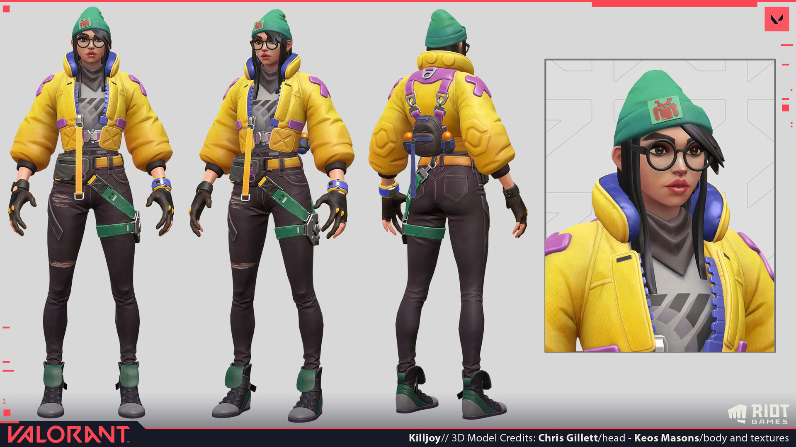

La historia de killjoy
Klara Böhringer, más conocido como Killjoy es un personaje que pertenece al videojuego (creado por Riot Games), Valorant. Fue revelado oficialmente el 29 de julio de 2020 en la versión Beta del juego.
Killjoy es una brillante agente que se encarga de tomar posiciones clave del campo de batalla con su arsenal de inventos. Si su daño no acaba con los enemigos, su horda de robots ayudará a su equipo a despejarlos en un abrir y cerrar de ojos.

Klara Böhringer es una inventora alemana nacida de padre alemán y madre asiática. Nominada para el premio al Inventor Distinguido, Böhringer se convirtió en jefa del departamento de I+D de Kingdom a los 18 años. Tuvo un éxito increíble y logró muchos avances durante su estancia en Kingdom con varias de sus creaciones e innovaciones. Böhringer fue la cuarta agente en unirse al Protocolo VALORANT como "Killjoy". Se ganó su apodo después de que su equipo lo utilizara inicialmente para elogiar sus extraordinarias habilidades, que reducían la cantidad de trabajo que el resto tenía que hacer, y Klara decidiera quedarse con el apodo. En la actualidad, Killjoy continúa su labor innovadora como agente de VALORANT y protegida del comandante de la organización, Brimstone. Desde inventar desactivadores de picos bajo la presión de una detonación inminente hasta construir teletransportadores para el transporte entre mundos, cualquier dispositivo que el Protocolo necesite para cualquier propósito: con las herramientas adecuadas, Killjoy puede fabricarlo.
Su personalidad

El epítome de la eficiencia alemana, Killjoy siempre muestra entusiasmo ante la oportunidad de poder utilizar al máximo la tecnología que construye, así como la oportunidad de recuperar conocimientos adicionales. Siempre ambiciosa en su trabajo, Killjoy ha admitido sin pudor que tiene un historial de explotar misiones relacionadas con la tecnología para "sacar más dinero" del presupuesto trimestral del Protocolo. Aunque se describe a sí misma como "fría como una lechuga", Killjoy se frustra cada vez que ve que sus compañeros de equipo no participan en sus peticiones, como probar nuevas tecnologías o leer los informes de datos que ha escrito. Sin embargo, confía plenamente en su propia genialidad, como se ve cuando les dice a sus compañeros (sobre todo a los usuarios de tecnología) que le confíen sus artilugios para que ella los arregle, y cuando recuerda al equipo que le dejen a ella la tarea de pensar más de la cuenta. En un mensaje de voz enviado a Brimstone, en el que expresaba su tristeza por la pérdida de vidas no militares tras la destrucción del laboratorio Everett-Linde, se vislumbra su carácter compasivo.
Apariencia de Killjoy
Killjoy es una joven alemana de pelo castaño oscuro y ojos marrones. Suele llevar una chaqueta amarilla acolchada con el interior azul, parches morados con una "X" en cada hombro y un gorro verde. Debajo de la chaqueta lleva una camiseta gris con un gráfico de barras ascendentes. Lleva gafas redondas con contorno negro, un par de pendientes de aro plateados en cada oreja y un par de zapatillas verdes que parecen unas Converse Chuck Taylor con puntera plateada y lengüeta suelta. Sus manos están cubiertas por un par de guantes negros con tiras azules que dejan al descubierto los dedos anular y meñique. Lleva unos vaqueros pitillo negros rotos con una correa verde en el muslo izquierdo que también está conectada a una riñonera. En "WARM-UP", se ve a Killjoy con una chaqueta blanca con capucha y el logotipo de una mascota rana, y una variación amarilla de su gorro.